Tranças em Florianópolis: box braids, boho e nagô feitas com calma e capricho
Aquela trança que você salvou no celular pode sair igualzinha, ou ainda melhor. A Karol faz box braids, boho braids com cachos, goddess, nagô e tranças coloridas, com acabamento firme, raiz confortável e resultado que dura semanas.
- Mande a foto de referência
- Tensão confortável na raiz
- Cores e cachos
- Ilha e Continente
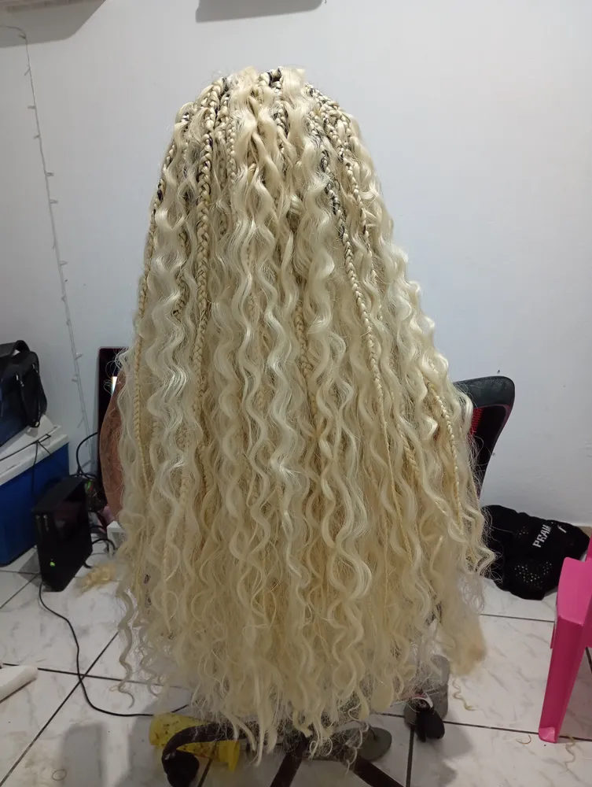
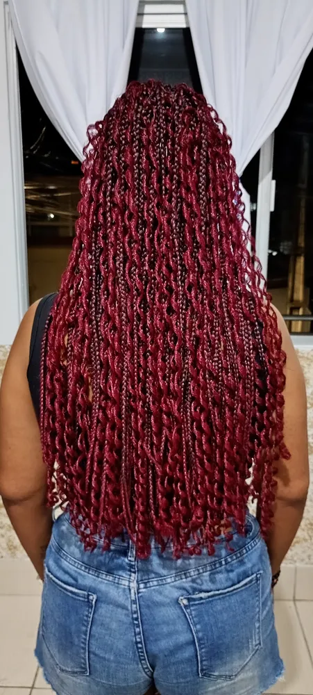
Trancista em Florianópolis que entrega o modelo que você sonhou
A Karol é trancista na Grande Florianópolis e faz tranças afro sob medida: box braids, boho braids, goddess braids, tranças nagô e versões coloridas, em qualquer comprimento. Você manda a foto do modelo, ela avalia o seu cabelo e diz o que dá para fazer, quanto tempo leva e quanto custa.
Trança é autoestima, praticidade e identidade. É acordar pronta, ir para a praia sem se preocupar com o cabelo e passar semanas sem escova e chapinha. Por isso cada detalhe importa: divisões alinhadas, tranças do mesmo tamanho, pontas bem finalizadas e, principalmente, uma raiz que não machuca.
- Divisões limpas e tranças uniformes
- Tensão confortável para proteger o fio natural
- Orientação sobre jumbo, cor e comprimento
- Dicas de manutenção para durar mais
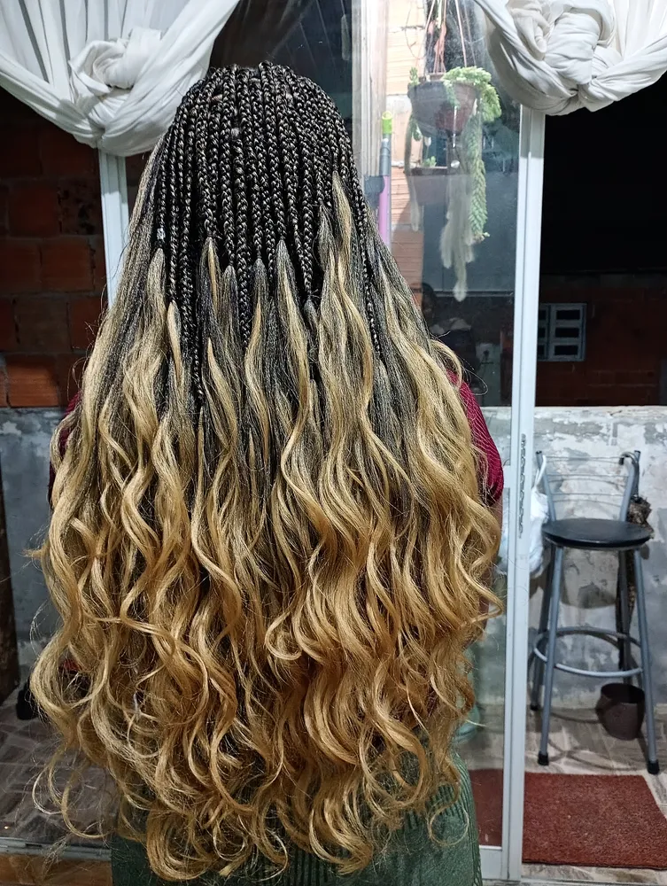
Tipos de tranças que você pode fazer
Do clássico ao cheio de cachos. Se o modelo que você quer não está aqui, mande a foto que a gente conversa.
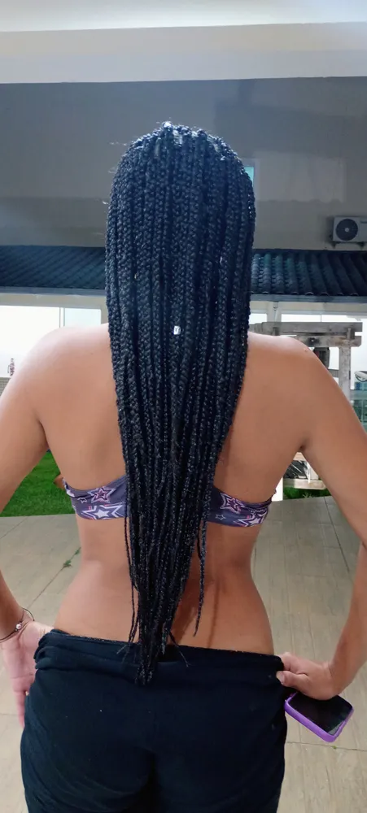
Box braids
Tranças soltas, divididas em quadrados, do tamanho que você quiser. Clássicas, práticas e versáteis para prender de mil jeitos.
Ver detalhesBoho braids com cachos
Tranças com mechas cacheadas soltas ao longo do comprimento. Visual leve, romântico e cheio de movimento.
Ver detalhesGoddess braids
Trança com cachos e volume, em cores naturais ou marcantes como o vermelho e o azul.
Ver detalhes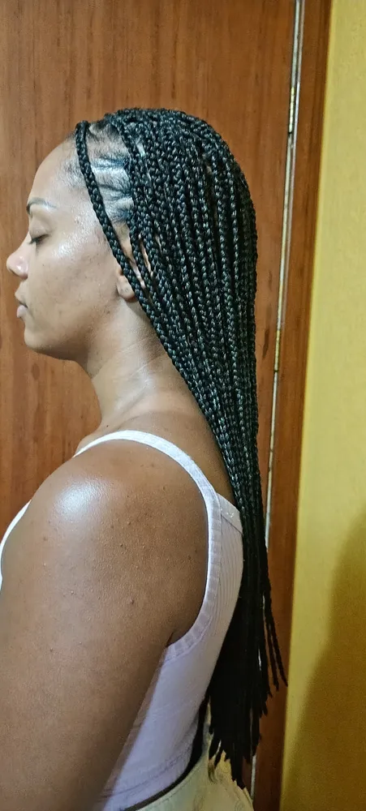
Tranças nagô
Tranças rentes ao couro cabeludo, sozinhas ou combinadas com box braids para um penteado com desenho.
Ver detalhesJá tem o modelo salvo no celular?
Mande a foto de referência no WhatsApp e receba o orçamento.
Box braids: a trança mais pedida, do jeito certo
As box braids levam esse nome pelas divisões em formato de quadrado na raiz. O jumbo é trançado junto com o cabelo natural, do começo à ponta, e o resultado é uma trança solta, com caimento bonito e fácil de prender em coque, rabo ou meio preso.
Você escolhe três coisas: espessura (finas, médias ou grossas), comprimento (ombro, meio das costas, cintura) e cor (preto natural, castanho, caramelo, loiro, ou cores marcantes como azul e vermelho). Dá também para adicionar fios coloridos, anéis e búzios.
- Box braids finas, médias e grossas
- Com cachos nas pontas ou lisas
- Coloridas, ombré ou com mechas
- Com acessórios: anéis, búzios e fios
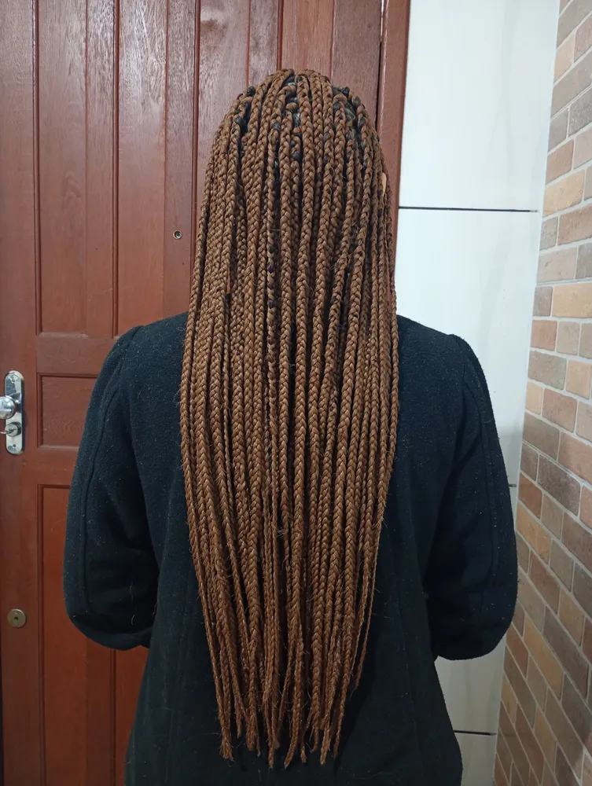
Boho braids e goddess braids: tranças com cachos soltos
As tranças com cachos estão entre as mais buscadas da região, e não é à toa. Nas boho braids, mechas cacheadas escapam ao longo da trança e criam um visual leve, meio desfeito de propósito, que combina com o clima de Floripa. As goddess braids têm pontas cacheadas e mais volume, ótimas para quem quer impacto.
Os cachos pedem um pouco mais de cuidado: hidratar com leave-in leve, evitar pentear os fios soltos e dormir com touca ou fronha de cetim. Em troca, entregam um dos resultados mais bonitos que a trança pode ter.
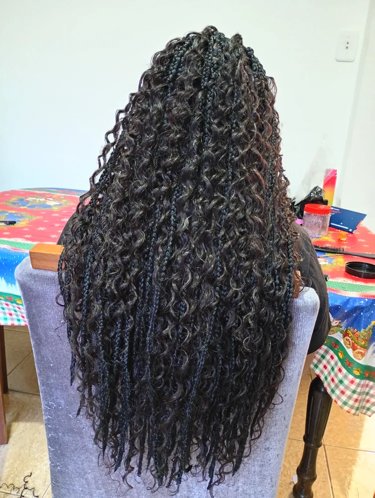
Tranças nagô: desenho rente à raiz
A trança nagô é feita rente ao couro cabeludo, em linhas retas ou com desenhos. Pode ser usada sozinha, em penteados mais curtos e rápidos, ou na frente do cabelo combinada com box braids soltas atrás, um dos visuais preferidos do momento.
É uma ótima escolha para treino, praia e rotina corrida, porque o cabelo fica todo preso e protegido.
Como escolher sua trança e se preparar
Escolha a referência
Salve 1 ou 2 fotos do modelo e mande pelo WhatsApp junto com uma foto do seu cabelo atual.
Receba o orçamento
A Karol passa o valor, o tempo estimado e a quantidade e cor de jumbo indicadas.
Chegue com o cabelo limpo
Cabelo lavado, bem seco e sem creme pesado deixa a trança mais firme e bonita.
Reserve o tempo
Trança bem feita leva algumas horas. Venha com calma, um lanche e uma playlist.
Como fazer suas tranças durarem mais
| Cuidado | Como fazer | Por que importa |
|---|---|---|
| Dormir protegida | Touca, lenço ou fronha de cetim | Evita frizz e mantém os cachos definidos |
| Lavar o couro cabeludo | Shampoo diluído direto na raiz, a cada 1 ou 2 semanas | Remove oleosidade sem desmanchar a trança |
| Secar bem | Toalha e secador em temperatura fria ou morna | Evita odor e umidade presa no jumbo |
| Hidratar os cachos | Leave-in leve ou spray de água com creme | Mantém os cachos soltos bonitos por mais tempo |
| Respeitar o prazo | Retirar entre 4 e 8 semanas | Protege a raiz e o crescimento do seu cabelo |
Pronta para sair do salão sem pensar no cabelo por semanas?
A agenda de tranças enche rápido. Reserve o seu dia.
Tranças coloridas, ombré e com mechas
Trança também é a forma mais fácil de testar cor sem química no seu cabelo. Dá para fazer o preto natural, castanho escuro, caramelo e loiro, ou ir para cores marcantes como azul royal, azul claro e vermelho. O ombré, que começa escuro na raiz e clareia até a ponta, é um dos pedidos mais comuns e fica lindo com cachos.
Comprimento: na altura dos ombros a trança é mais leve e rápida; no meio das costas é o equilíbrio entre praticidade e impacto; até a cintura ou além é para quem quer o visual mais marcante, com mais jumbo e mais horas de trabalho.
Espessura: tranças finas duram bonitas por mais tempo e têm movimento; médias são as mais versáteis; grossas ficam prontas mais rápido e têm presença forte.
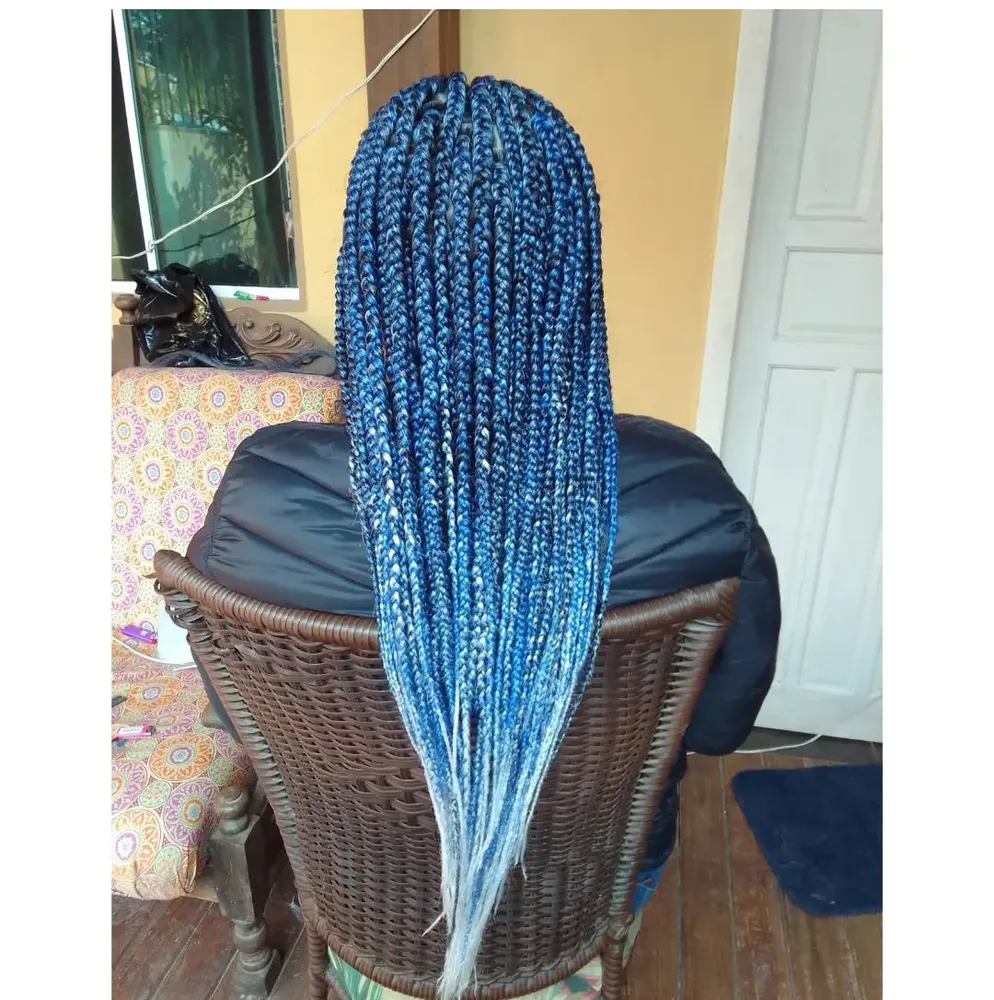
Tranças para praia, treino, trabalho e festa
Para a praia
Em Floripa o cabelo vive entre sol, sal e vento. Tranças protegem o fio natural, secam com facilidade e continuam bonitas depois do mar. Boho braids são as queridinhas do verão.
Para treinar
Box braids e nagô deixam o cabelo preso e firme durante corrida, academia e surf. Depois é só secar bem a raiz.
Para o trabalho
Acordar pronta todos os dias economiza tempo de manhã. Tons naturais e comprimento médio são discretos e elegantes.
Para festas e eventos
Goddess braids, cores fortes e acessórios dourados transformam a trança no centro do visual. Marque com alguns dias de antecedência.
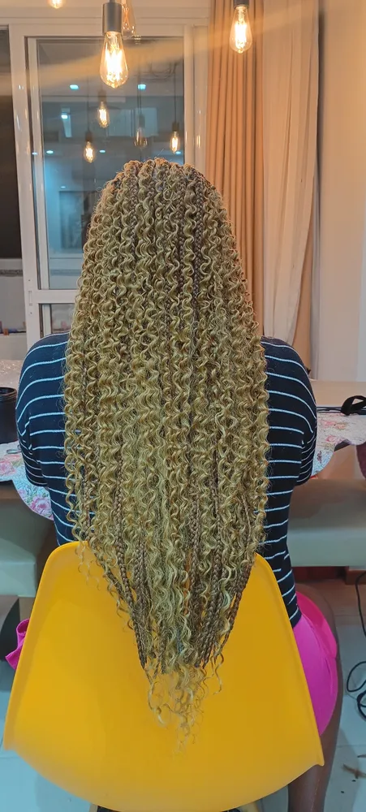
Karoline Maia, trancista na Grande Florianópolis
Karoline Maia é a fundadora da Karoline Maia Terapias. Além de terapeuta corporal, é trancista e faz pessoalmente cada trança, do planejamento das divisões ao acabamento das pontas. Todas as fotos desta página são de clientes reais atendidas por ela.
Atendemos com hora marcada em toda a Grande Florianópolis. Telefone e WhatsApp: (48) 99145-5759. Instagram: @karoline_maia_terapias.
Falar com a KarolTranças feitas pela Karol
Todas as fotos são de clientes reais atendidas na Grande Florianópolis.
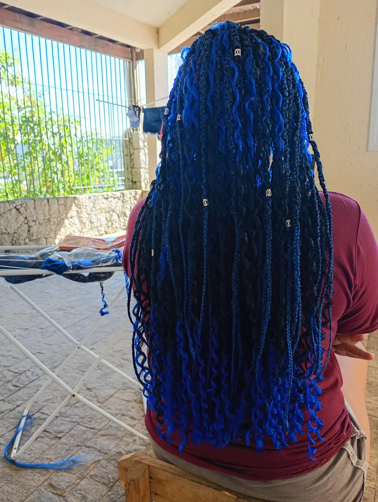
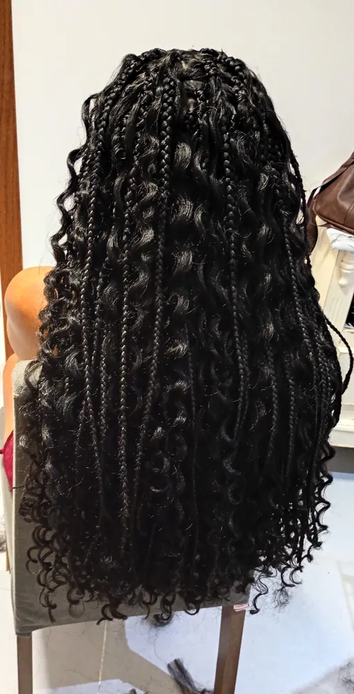
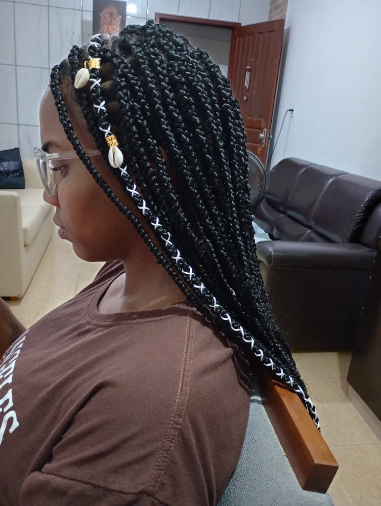
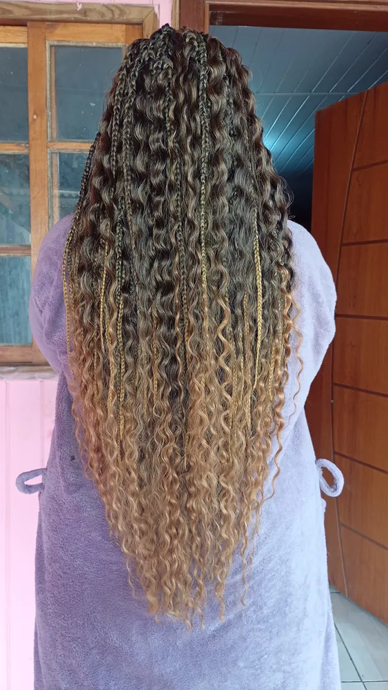
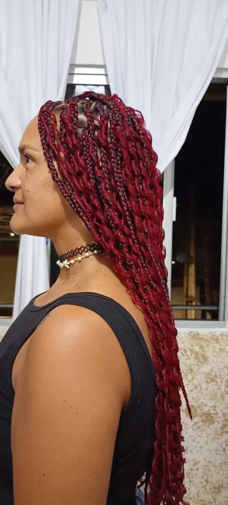
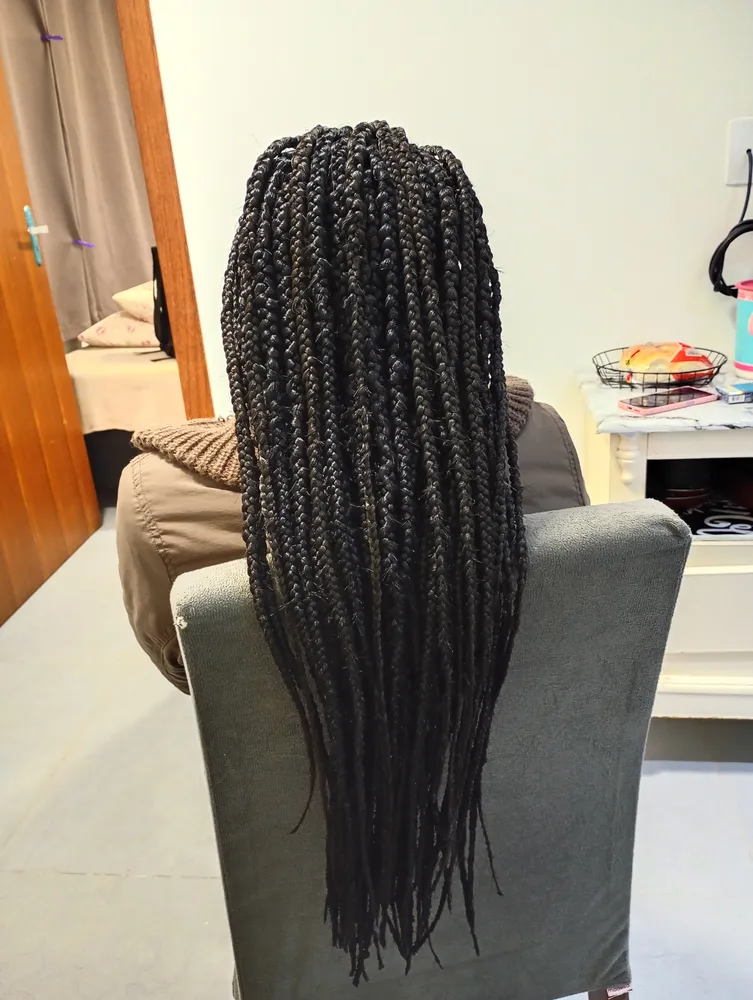
Tranças em toda a Grande Florianópolis
Atendo com hora marcada clientes da Ilha, do Continente e das cidades vizinhas. No WhatsApp a gente combina o melhor local e horário pra você.
- Florianópolis
- São José
- Palhoça
- Biguaçu
- Santo Amaro da Imperatriz
- Governador Celso Ramos
- Antônio Carlos
- Águas Mornas
- São Pedro de Alcântara
Bairros com mais procura:
- Centro
- Trindade
- Itacorubi
- Lagoa da Conceição
- Campeche
- Rio Tavares
- Ingleses
- Canasvieiras
- Jurerê
- Estreito
- Coqueiros
- Kobrasol (São José)
- Barreiros (São José)
- Pagani (Palhoça)
- Ponte do Imaruim (Palhoça)
Massagem em São José
Kobrasol, Campinas, Barreiros e Forquilhinhas.
Ver regiãoMassagem em Palhoça
Pagani, Pedra Branca, Ponte do Imaruim.
Ver regiãoMassagem no Centro de Florianópolis
Centro, Agronômica, Trindade e Itacorubi.
Ver regiãoMassagem no Campeche
Sul e Leste da Ilha: Rio Tavares, Morro das Pedras, Lagoa.
Ver regiãoMassagem em Canasvieiras
Norte da Ilha: Jurerê, Ingleses, Cachoeira.
Ver regiãoMassagem no Estreito
Continente: Coqueiros, Capoeiras, Balneário.
Ver regiãoToda a Grande Florianópolis
Biguaçu, Santo Amaro e demais cidades.
Ver regiãoPerguntas sobre tranças
Quanto custa fazer tranças em Florianópolis?
O valor muda conforme o estilo (box braids, boho, goddess, nagô), a espessura, o comprimento e a quantidade de jumbo ou cabelo cacheado usada. O jeito mais rápido de saber é mandar uma foto do modelo que você quer no WhatsApp: a Karol responde com o valor e o tempo estimado.
Quanto tempo demora para fazer box braids?
Depende do tamanho e do comprimento. Tranças mais grossas e na altura dos ombros são mais rápidas; box braids finas e longas, até a cintura, levam bem mais tempo. Na conversa pelo WhatsApp você já recebe a estimativa para o seu modelo e pode se programar.
Quanto tempo as tranças duram?
Com cuidado, box braids e boho braids costumam ficar bonitas de 4 a 8 semanas. Não é recomendado passar muito disso, para não sobrecarregar a raiz e o fio natural.
O jumbo está incluso ou eu preciso comprar?
Isso é combinado no orçamento. A Karol te orienta sobre a quantidade, a cor e o tipo de jumbo ou cabelo cacheado para o modelo escolhido.
Qual a diferença entre box braids, boho braids e goddess braids?
Box braids são tranças soltas, divididas em quadradinhos, com o fio liso do começo ao fim. Nas boho braids, mechas cacheadas saem ao longo da trança, deixando um visual mais solto e natural. Goddess braids também misturam trança e cachos, com as pontas cacheadas e um acabamento mais volumoso.
Trança machuca ou puxa muito?
Uma trança bem feita não pode doer por dias nem repuxar a pele. A Karol trabalha com tensão confortável justamente para proteger a raiz do seu cabelo. Se sentir incômodo durante o processo, é só falar.
Faz tranças em quem tem cabelo curto?
Na maioria dos casos, sim. Com alguns centímetros de cabelo já é possível prender o jumbo. Mande uma foto do seu cabelo atual junto com a referência que ela te diz o que dá para fazer.
Posso lavar o cabelo com as tranças?
Pode. O ideal é lavar o couro cabeludo a cada uma ou duas semanas com shampoo diluído, massageando a raiz com a ponta dos dedos, e depois secar muito bem com toalha e secador. Assim você mantém a higiene sem desmanchar as tranças.
Criança pode fazer trança?
Pode, com modelos mais leves, tranças mais grossas e tensão ainda mais suave na raiz, para proteger o cabelo em crescimento. Conte a idade no WhatsApp que a Karol indica o modelo mais adequado.
Atende em São José, Palhoça e Biguaçu?
Sim. O atendimento é para toda a Grande Florianópolis, incluindo São José, Palhoça e Biguaçu. Local e horário são combinados pelo WhatsApp.
Sua próxima trança começa com uma foto.
Mande a referência agora e receba o orçamento no WhatsApp.
Depois das horas de trança, que tal uma massagem?
Além de trancista, a Karol é terapeuta: massagem terapêutica, ventosaterapia, pedras quentes e Reiki para aliviar dores e tensões.
Conhecer a massagem terapêutica